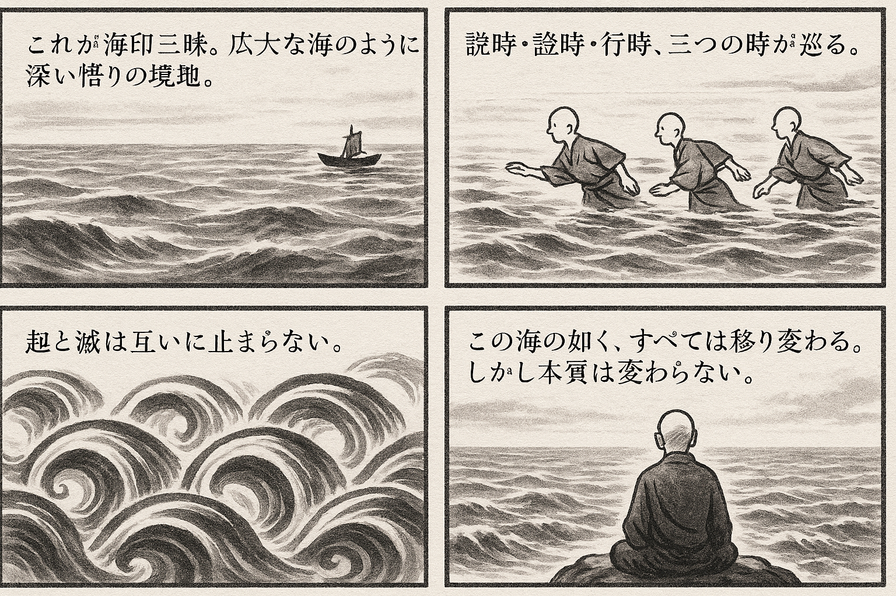

七十五巻 巻一覧
正法眼藏第13 海印三昧
本ページの導入・語彙・深掘り・クイズは tools/regen_volume_intro_from_corpus.py が OpenAI API で生成したものです（入力は当巻冒頭原文の抜粋）。内容はモデル出力のため、重要箇所は必ず原文・教本と照合してください。
出典: https://shomonji.or.jp/zazen/doc/genzou.html
（ローカル生成の全文: 全文ページ）
この巻の位置（導入）
諸佛諸祖とあるに、かならず海印三昧なり。この三昧の游泳に、説時あり、證時あり、行時あり。
海上行の功徳、その徹底行あり。これを深深海底行なりと海上行するなり。流浪生死を還源せしめんと願求する、是什麼心行にはあらず。
語彙の足場
- 海印三昧：海印三昧は、仏教における深い瞑想状態を指し、様々な法が一体となることを体現する。
- 衆法：衆法は、様々な法や現象を指し、これらが合成されて一つの存在を形成することを示す。
- 起滅：起滅は、物事の始まりと終わりを意味し、特に法の起こりと消滅に関連する。
- 不言我起：不言我起は、自己の存在や行為を言葉で表現しないことを意味し、法の本質を示す。
- 佛道：佛道は、仏教の教えや実践を指し、悟りを目指す道を示す。
本文（冒頭・抜粋）
出典はリポジトリ内 doc/正法眼蔵.txt です。原文の参照元: https://shomonji.or.jp/zazen/doc/genzou.html
諸佛諸祖とあるに、かならず海印三昧なり。この三昧の游泳に、説時あり、證時あり、行時あり。海上行の功徳、その徹底行あり。これを深深海底行なりと海上行するなり。流浪生死を還源せしめんと願求する、是什麼心行にはあらず。從來の透關破節、もとより諸佛諸祖の面面なりといへども、これ海印三昧の朝宗なり。
佛言、但以衆法、合成此身。起時唯法起、滅時唯法滅。此法起時、不言我起。此法滅時、不言我滅。
前念後念、念念不相待。前法後法、法法不相對。是卽名爲海印三昧。
（佛言はく、但衆法を以て此身を合成す。起時は唯法の起なり、滅時は唯法の滅なり。此の法起る時、我起ると言はず。此の法滅する時、我滅すと言はず。
前念後念、念念不相待なり。前法後法、法法不相對なり。是れを卽ち名づけて海印三昧とす。）
この佛道を、くはしく參學功夫すべし。得道入證はかならずしも多聞によらず、多語によらざるなり。多聞の廣學はさらに四句に得道し、恆沙の徧學、つひに一句偈に證入するなり。いはんやいまの道は、本覺を前途にもとむるにあらず、始覺を證中に拈來するにあらず。おほよそ本覺等を現成せしむるは佛祖の功徳なりといへども、始覺本覺等の諸覺を佛祖とせるにはあらざるなり。
いはゆる海印三昧の時節は、すなはち但以衆法の時節なり、但以衆法の道得なり。このときを合成此身といふ。衆法を合成せる一合相、すなはち此身なり。此身を一合相とせるにあらず、衆法合成なり。合成此身を此身と道得せるなり。
起時唯法起。この法起、かつて起をのこすにあらず。このゆゑに、起は知覺にあらず、知見にあらず、これを不言我起といふ。我起を不言するに、別人は此法起と見聞覺知し、思量分別するにはあらず。さらに向上の相見のとき、まさに相見の落便宜あるなり。起はかならず時節到來なり、時は起なるがゆゑに。いかならんかこれ起なる、起也なるべし。
すでにこれ時なる起なり。皮肉骨髓を獨露せしめずといふことなし。起すなはち合成の起なるがゆゑに、起の此身なる、起の我起なる、但以衆法なり。聲色と見聞するのみにあらず、我起なる衆法なり、不言なる我起なり。不言は不道にはあらず、道得は言得にあらざるがゆゑに、起時は此法なり、十二時にあらず。此法は起時なり、三界の競起にあらず。
古佛いはく、忽然火起。この起の相待にあらざるを、火起と道取するなり。
古佛いはく、起滅不停時如何（起滅不停の時如何）。
しかあれば、起滅は我我起、我我滅なるに不停なり。この不停の道取、かれに一任して辨肯すべし。この起滅不停時を佛祖の命脈として斷續せしむ。起滅不停時は是誰起滅（是れ誰が起滅ぞ）なり。是誰起滅は、應以此身得度者なり、卽現此身なり、而爲説法なり。過去心不可得なり、汝得吾髓なり、汝得吾骨なり。是誰起滅なるゆゑに。
此法滅時、不言我滅。まさしく不言我滅のときは、これ此法滅時なり。滅は法の滅なり。滅なりといへども法なるべし。法なるゆゑに客塵にあらず、客塵にあらざるゆゑに不染汚なり。ただこの不染汚、すなはち諸佛諸祖なり。汝もかくのごとしといふ、たれか汝にあらざらん。前念後念あるはみな汝なるべし。吾もかくのごとしといふ、たれか吾にあらざらん。前念後念はみな吾なるがゆゑに。この滅に多般の手眼を莊嚴せり。いはゆる無上大涅槃なり、いはゆる謂之死（之を死と謂ふ）なり、いはゆる執爲斷（執して斷と爲す）なり、いはゆる爲所住（所住と爲す）なり。いはゆるかくのごとくの許多手眼、しかしながら滅の功徳なり。滅の我なる時節に不言なると、起の我なる時節に不言なるとは、不言の同生ありとも、同死の不言にはあらざるべし。すでに前法の滅なり、後法の滅なり。法の前念なり、法の後念なり。爲法の前後法なり、爲法の前後念なり。不相待は爲法なり、不相待は法爲なり。不相對ならしめ、不相待ならしむるは八九成の道得なり。滅の四大五蘊を手眼とせる、拈あり收あり。滅の四大五蘊を行程とせる、進歩あり相見あり。このとき、通身是手眼、還是不足なり。遍身是手眼、還是不足なり。
おほよそ滅は佛祖の功徳なり。いま不相對と道取あり、不相待と道取あるは、しるべし、起は初中後起なり。官不容針、私通車馬（官には針を容れず、私に車馬を通ず）なり。滅を初中後に相待するにあらず、相對するにあらず。從來の滅處に忽然として起法すとも、滅の起にはあらず、法の起なり。法の起なるゆゑに不對待相なり。また滅と滅と相待するにあらず、相對するにあらず。滅も初中後滅なり、相逢不拈出、擧意便知有（相逢ふては拈出せず、意を擧すれば便ち有ることを知る）なり。從來の起處に忽然として滅すとも、起の滅にあらず、法の滅なり。法の滅なるがゆゑに不相對待なり。たとひ滅の是卽にもあれ、たとひ起の是卽にもあれ、但以海印三昧、名爲衆法なり。是卽の修證はなきにあらず、只此不染汚、名爲海印三昧なり。
三昧は現成なり、道得なり。背手摸枕子の夜間なり。夜間のかくのごとく背手摸枕子なる、摸枕子は億億萬劫のみにあらず、我於海中、唯常宣説妙法華經なり。不言我起なるがゆゑに我於海中なり。前面も一波纔動萬波隨なる常宣説なり、後面も萬波纔動一波隨の妙法華經なり。たとひ千尺萬尺の絲綸を卷舒せしむとも、うらむらくはこれ直下垂なることを。いはゆるの前面後面は我於海面なり。前頭後頭といはんがごとし。前頭後頭といふは頭上安頭なり。海中は有人にあらず、我於海は世人の住處にあらず、聖人の愛處にあらず。我於ひとり海中にあり。これ唯常の宣説なり。この海中は中間に屬せず、内外に屬せず、鎭常在説法華經なり。東西南北に不居なりといへども、滿船空載月明歸（滿船空しく月明を載せて歸る）なり。この實歸は便歸來なり。たれかこれを滯水の行履なりといはん。ただ佛道の劑限に現成するのみなり。これを印水の印とす。さらに道取す、印空の印なり。さらに道取す、印泥の印なり。印水の印、かならずしも印海の印にはあらず、向上さらに印海の印なるべし。これを海印といひ、水印といひ、泥印といひ、心印といふなり。心印を單傳して印水し、印泥し、印空するなり。
曹山元證大師、因僧問、承教有言、大海不宿死屍、如何是海（承る教に言へること有り、大海死屍を宿せずと。如何なるか是れ海）。
師云、包含萬有。
僧云、爲什麼不宿死屍（什麼と爲てか死屍を宿せざる）。
師云く、絶氣者不著。
僧曰く、既是包含萬有、爲什麼絶氣者不著（既に是れ包含萬有、什麼と爲てか絶氣の者不著なる）。
師云く、萬有非其功絶氣（萬有、その功、絶氣に非ず）。
この曹山は、雲居の兄弟なり。洞山の宗旨、このところに正的なり。いま承教有言といふは、佛祖の正教なり。凡聖の教にあらず、附佛法の小教にあらず。
大海不宿死屍。いはゆる大海は、内海外海等にあらず、八海等にはあらざるべし。これらは學人のうたがふところにあらず。海にあらざるを海と認ずるのみにあらず、海なるを海と認ずるなり。たとひ海と強爲すとも、大海といふべからざるなり。大海はかならずしも八功徳水の重淵にあらず、大海はかならずしも鹹水等の九淵にあらず。衆法は合成なるべし。大海かならずしも深水のみにてあらんや。このゆゑに、いかなるか海と問著するは、大海のいまだ人天にしられざるゆゑに、大海を道著するなり。これを問著せん人は、海執を動著せんとするなり。
不宿死屍といふは、不宿は明頭來明頭打、暗頭來暗頭打なるべし。死屍は死灰なり、幾度逢春不變心（幾度か春に逢ふも心を變ぜず）なり。死屍といふは、すべて人人いまだみざるものなり。このゆゑにしらざるなり。
師いはく包含萬有は、海を道著するなり。宗旨の道得するところは、阿誰なる一物の萬有を包含するといはず、包含、萬有なり。大海の萬有を包含するといふにあらず。包含萬有を道著するは、大海なるのみなり。なにものとしれるにあらざれども、しばらく萬有なり。佛面祖面と相見することも、しばらく萬有を錯認するなり。包含のときは、たとひ山なりとも高高峰頭立のみにあらず。たとひ水なりとも深深海底行のみにあらず。收はかくのごとくなるべし、放はかくのごとくなるべし。佛性海といひ、毘盧藏海といふ、ただこれ萬有なり。海面みえざれども、游泳の行履に疑著する事なし。
たとへば、多福一叢竹を道取するに、一莖兩莖曲なり。三莖四莖斜なるも、萬有を錯失せしむる行履なりとも、なにとしてかいまだいはざる、千曲萬曲なりと。なにとしてかいはざる、千叢萬叢なりと。一叢の竹、かくのごとくある道理、わすれざるべし。曹山の包含萬有の道著、すなはちなほこれ萬有なり。
僧のいはく爲什麼絶氣者不著は、あやまりて疑著の面目なりといふとも、是什麼心行なるべし。從來疑著這漢なるときは、從來疑著這漢に相見するのみなり。什麼處在に爲什麼絶氣者不著なり。爲什麼不宿死屍なり。這頭にすなはち既是包含萬有、爲什麼絶氣者不著なり。しるべし、包含は著にあらず、包含は不宿なり。萬有たとひ死屍なりとも、不宿の直須萬年なるべし。不著の這老僧一著子なるべし。
曹山の道すらく萬有非其功絶氣。いはゆるは、萬有はたとひ絶氣なりとも、たとひ不絶氣なりとも、不著なるべし。死屍たとひ死屍なりとも、萬有に同參する行履あらんがごときは包含すべし、包含なるべし。萬有なる前程後程、その功あり、これ絶氣にあらず。いはゆる一盲引衆盲なり。一盲引衆盲の道理は、さらに一盲引一盲なり、衆盲引衆盲なり。衆盲引衆盲なるとき、包含萬有、包含于包含萬有なり。さらにいく大道にも萬有にあらざる、いまだその功夫現成せず、海印三昧なり。
正法眼藏海印三昧第十三
仁治三年壬寅孟夏二十日記于觀音導利興聖寶林寺
寛元元年癸卯書寫之 懷弉
図解（4コマ・AI生成）
教義の根拠は本文・出典に従い、漫画は比喩の補助に留めてください。

深掘り（読解の手掛かり）
- 海印三昧は、仏教における重要な瞑想法であり、法の一体性を体現する。
- 衆法は、個々の存在が一つの全体を形成することを示す概念である。
- 起滅は、物事の変化を理解するための重要な視点であり、法の本質を探求する。
- 不言我起は、自己の存在を言葉で表現しないことから、真の理解を得ることを促す。
確認（形成評価）
各設問の下の「採点」で正誤を表示します（ブラウザ内のみ。ログは送りません）。